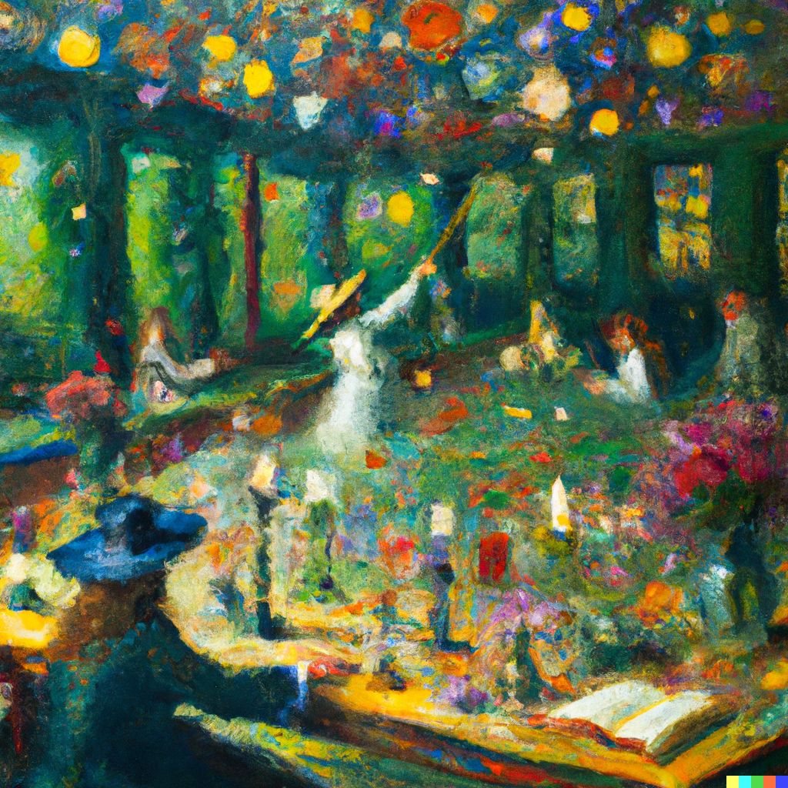

Mary enters her Spells class, the seating arrangement was different than the previous classes and she wonders if there is something special for this class. She takes a seat next to the witch student that is her partner for this class. "Today, we are going to be performing different spells and after each spell performed, you will switch partners. This will help everyone get to know everyone, take out your textbook, we are going to perform the spells that we have been talking about." The teacher says, taking out her textbooks to write down the spells on the board for everyone to see.
Mary is nervous because although she tried to say some spells on her own, they don't always work the way she wants them to but this is only practice and not a test. She picks up her wand, flicking it around for a little bit to prepare herself to say the different spells. "Are you ready Mary?" Her partner says, looking at her notebooks and at Mary, mouthing the spells under her breath.
"Yes! I do not mind who starts first." Mary says, trying to see if she can memorize the the first spell without needing to look back at the textbook.
| Beginning | Next Day |